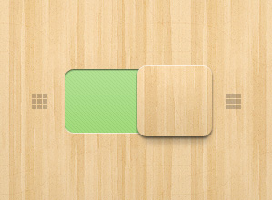

Mussum ipsum cacilds,
Abr 26, 2013 - 1 Comentários
Mussum ipsum cacilds, vidis litro abertis. Consetis adipiscings elitis. Pra lá , depois divoltis porris, paradis. Paisis, filhis, espiritis santis. Mé faiz elementum girarzis, nisi eros vermeio, in elementis mé pra quem é amistosis quis leo.
Continue Lendo...
Mussum ipsum cacilds
Abr 25, 2013 - 5 Comentários
Mussum ipsum cacilds, vidis litro abertis. Consetis adipiscings elitis. Pra lá , depois divoltis porris, paradis. Paisis, filhis, espiritis santis. Mé faiz elementum girarzis, nisi eros vermeio, in elementis mé pra quem é amistosis quis leo mussum ipsum cacilds, vidis litro abertis.
Continue Lendo...